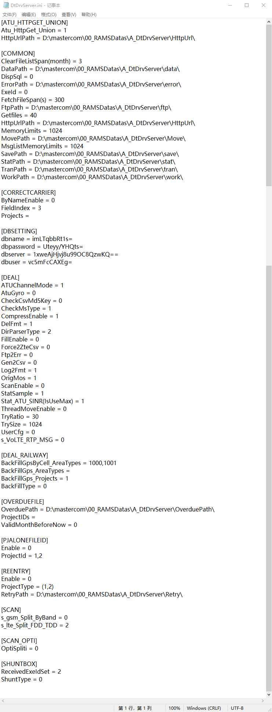

说明：
菜单栏总共只有两项：任务和帮助。任务菜单项基本没用。帮助菜单项用来查看软件版本。这个在追溯版本时很有用。
当有文件在解码时，正在解码和待解码的文件会列举在这里，已经解析进度的显示。
显示解析过程中输出的日志信息。
按钮包括：设置日志、立即解析、立即搬移、清理MT文件、退出 五个按钮。
状态栏显示程序的启动时间，已处理的文件数，剩余文件数，路径解析成功和失败的文件数，以及实时内存占用情况。
部署路径一定不能出现中文路径名！！！
说这一点是想要地市维护的同事，对解码的目录定期进行清理，保持干净。有些地市路网通后台的程序路径中， 堆满了很多无用的历史文件，导致每次替换文件的时候都很难查找，比较乱。
配置文件名为：DtDrvServer.ini，路径为程序目录的 ini 文件夹中,，内容如下：
配置项很多，但是日常维护的就几个而已。一下为需要掌握的配置项
这里主库指的是存放各地市库配置信息的数据库。
这个功能是防重入功能，即同一个数据库中符合条件的文件只能被入库一次，后续再入库，会被直接搬走，不解析。
解码程序分流设置
原因可能有：
路径解析失败的，找丁婷芳大佬解决。其它几种，直接将文件删掉，或者备份走即可。对于文件太大的，优先测试上传的人员是否可以切割。
原因可能有：
以上这些是需要一些经验的，比如留意一些路网通无法解析的文件格式，会查看日志。没有经验的话就要找我了。
这种情况一般是，解码程序在解析到某个文件的时候突然退出。导致剩下文件无法解码。
如果出现这种情况，直接查看日志文件 decoder.log ，看最后一条记录的文件名是什么，将此文件找到，移除 work 目录，然后启动解码看情况，如果正常解码了， 那就是这一个文件的问题，如果还会闪退，就继续查找闪退的文件。然后吧闪退的文件发给研发定位。
我们目前的解析规则优先级是 5G-PLMN > 4G-PLMN > 5G-EARFCN > 4G-EARFCN; 可以用客户端回放查看。搞不定提供数据找研发。
有经验的情况下，像一些文件名是语音的，解析为了空闲，文件名是数据的解析为了空闲，这种情况，直接回放查看信令列表是否有上传下载信令和语音信令就可以了。
这种情况一般是，文件名字写的日期和真正内容的日期是不一样的。导致文件不符合设置的查询条件。
这种情况一般是，同一个文件入库了两次，且命名了不同的名字。路网通的同一个库的 log_file 表中，同一个文件ID只有一条记录，如果重复入库，前面的记录会被后面的记录覆盖。 这种情况就会导致，文件可以解码成功，但是只能查到最后一个入库的记录。这时可以在 tb_adapter_file_list 表中查找文件入库的次数时间信息。
禽兽之变诈几何哉？止增笑耳。